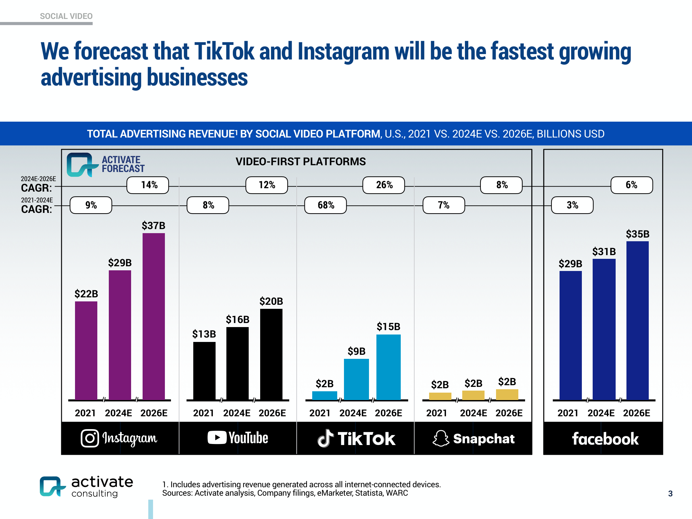

Social video time is rising but growth is decelerating: 2019–2024E CAGR 21% vs 2024E–2028E CAGR 2%. YouTube has the broadest cross-age reach. TikTok and Instagram are forecast to be the fastest-growing ad businesses. Per-user ad revenue is highest on Instagram/Facebook but generally trends down through 2026E.

“We forecast that TikTok and Instagram will be the fastest growing advertising businesses” — Unknown
For brands, rising but slowing social video time means reach remains scalable, yet incremental attention is harder to win—putting a premium on creative relevance and cross-platform frequency management. With YouTube’s broad age coverage, it’s a cornerstone for full-funnel and older demos, while TikTok and Instagram’s forecast ad growth points to strong ROI potential in younger and discovery-driven contexts. However, projected declines in monthly ARPU across platforms suggest CPM pressure and increased competition; marketers should lean into creative testing, short-form video formats, and MMM/incrementality to validate lift, protect ROAS, and reallocate budgets quickly toward platforms showing efficiency gains.